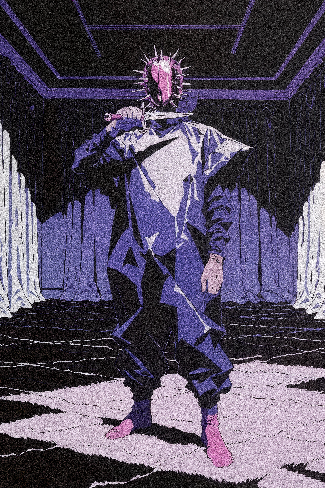
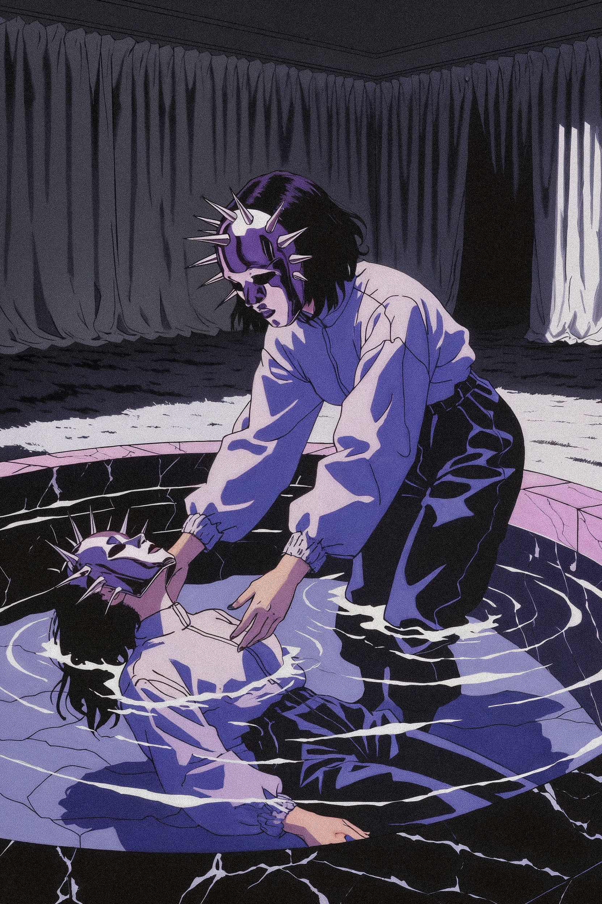
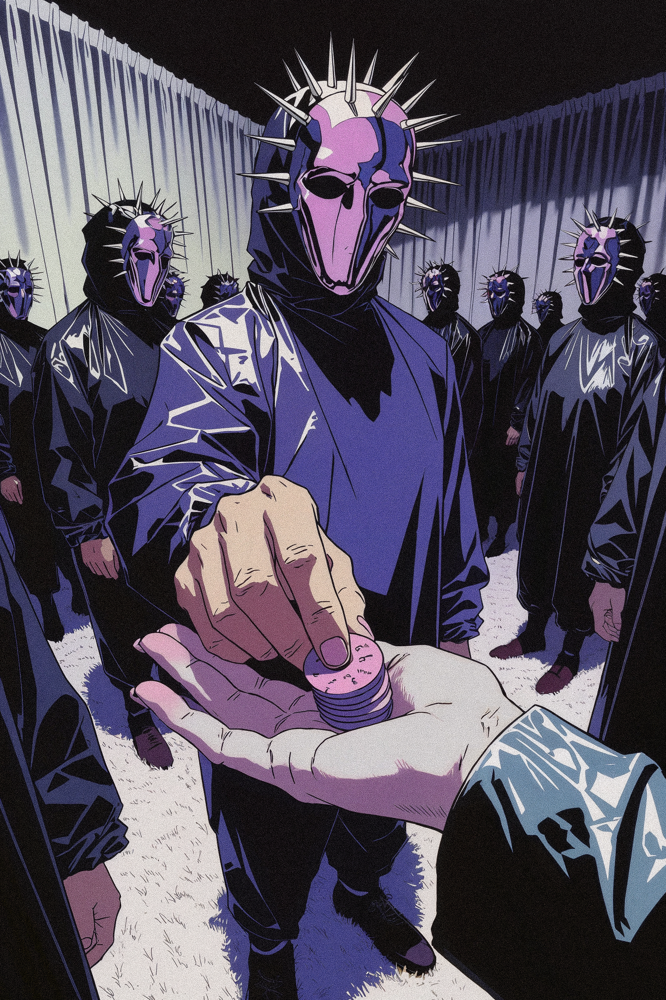
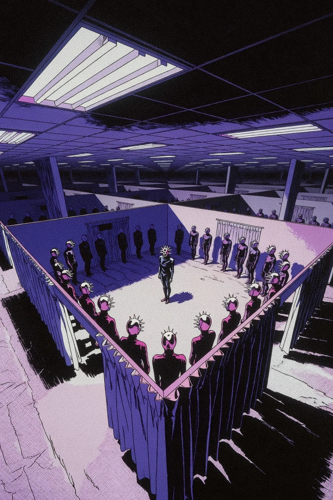
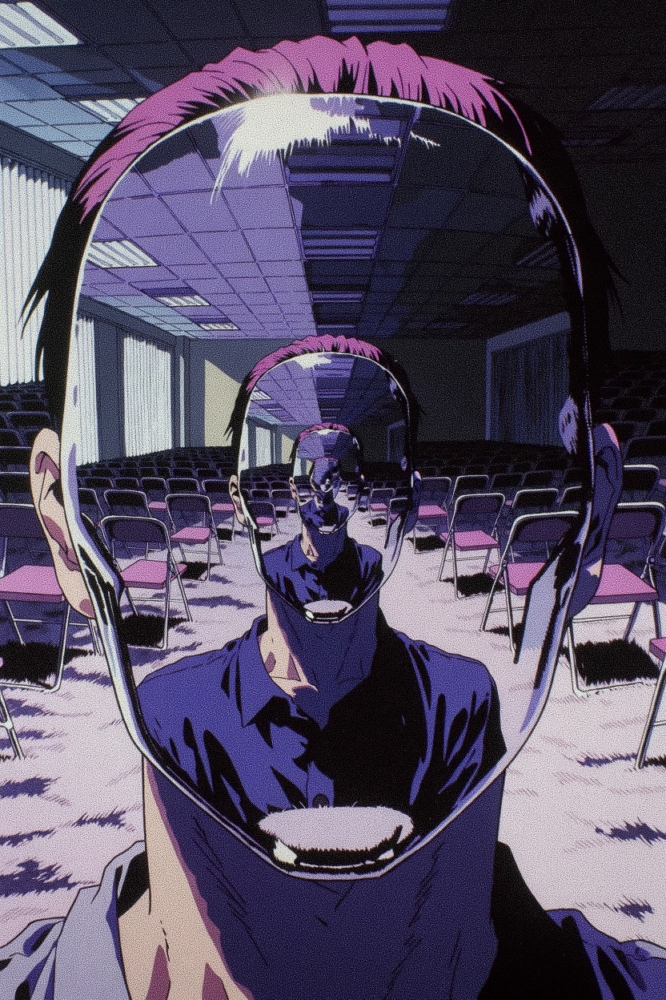
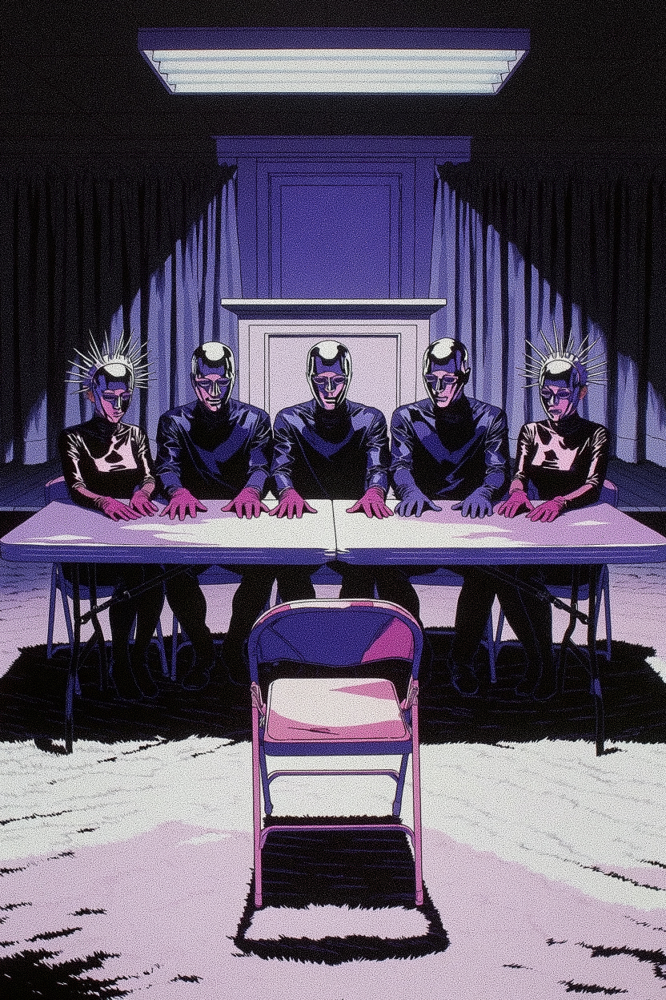

Experiment · Ritual Imagery
Initiations, baptisms, and the inner rooms of belief
A study of the rites people keep behind doors. The work draws on initiatory imagery — anointing, immersion, hidden language — to ask what a ceremony actually does to the person inside it. The visuals are reverent and uneasy at once.
Cabal is less interested in the secret than in the shape of secrecy: the gowns, the water, the long pause before the moment that changes a body's status in a community.






Generative video & stills · 2026
Every threshold is policed by costume.
The pieces were generated and re-composed to feel like archival fragments from ceremonies that never happened — or that happened so often the memory of them stopped belonging to any one tradition. Texture, garment, and water are the recurring vocabulary.